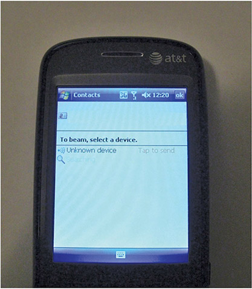
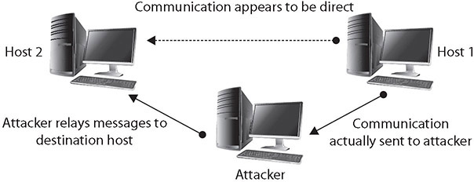
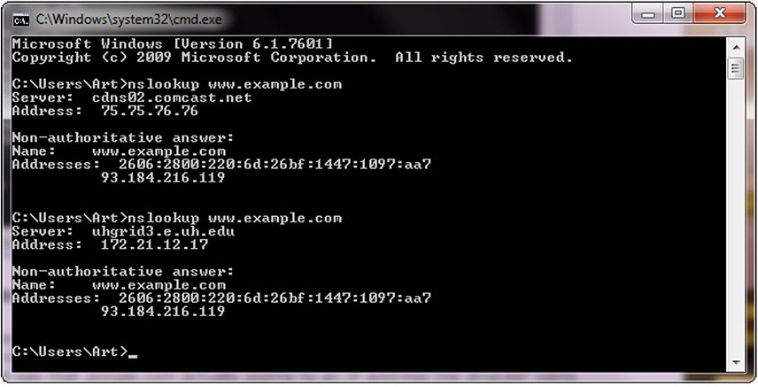
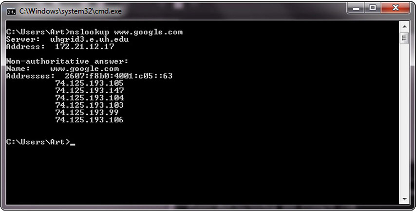
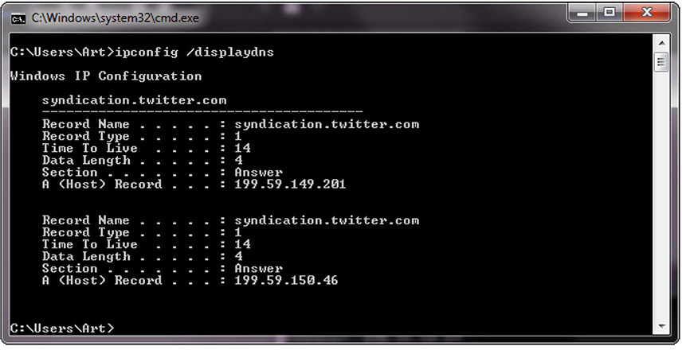
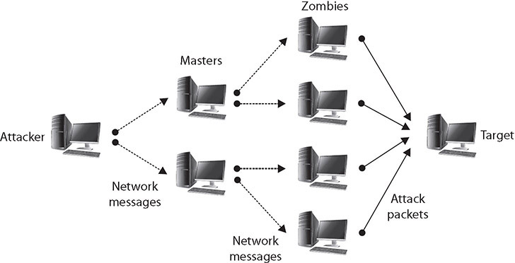
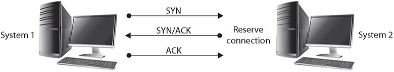
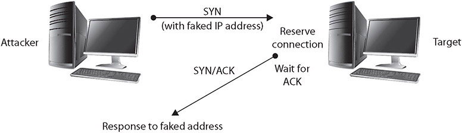

Table of Contents for
CompTIA Security+ All-in-One Exam Guide, Sixth Edition (Exam SY0-601)), 6th Edition
- Cover (01:09 mins)
- Title Page (01:09 mins)
- Copyright Page (03:27 mins)
- Dedication (01:09 mins)
- About the Authors (04:36 mins)
- Contents (19:33 mins)
- Preface (02:18 mins)
- Acknowledgments (01:09 mins)
- Introduction (12:39 mins)
-
Part I Threats, Attacks, and Vulnerabilities (01:09 mins)
- Chapter 1 Social Engineering Techniques (35:39 mins)
- Chapter 2 Type of Attack Indicators (37:57 mins)
- Chapter 3 Application Attack Indicators (33:21 mins)
- Chapter 4 Network Attack Indicators (39:06 mins)
- Chapter 5 Threat Actors, Vectors, and Intelligence Sources (44:51 mins)
- Chapter 6 Vulnerabilities (31:03 mins)
- Chapter 7 Security Assessments (23:00 mins)
- Chapter 8 Penetration Testing (25:18 mins)
-
Part II Architecture and Design (01:09 mins)
- Chapter 9 Enterprise Security Architecture (26:27 mins)
- Chapter 10 Virtualization and Cloud Security (25:18 mins)
- Chapter 11 Secure Application Development, Deployment, and Automation Concepts (27:36 mins)
- Chapter 12 Authentication and Authorization (33:21 mins)
- Chapter 13 Cybersecurity Resilience (39:06 mins)
- Chapter 14 Embedded and Specialized Systems (41:24 mins)
- Chapter 15 Physical Security Controls (49:27 mins)
- Chapter 16 Cryptographic Concepts (42:33 mins)
-
Part III Implementation (01:09 mins)
- Chapter 17 Secure Protocols (20:42 mins)
- Chapter 18 Host and Application Security (46:00 mins)
- Chapter 19 Secure Network Design (67:51 mins)
- Chapter 20 Wireless Security (25:18 mins)
- Chapter 21 Secure Mobile Solutions (43:42 mins)
- Chapter 22 Implementing Cloud Security (24:09 mins)
- Chapter 23 Identity and Account Management Controls (33:21 mins)
- Chapter 24 Implement Authentication and Authorization (37:57 mins)
- Chapter 25 Public Key Infrastructure (55:12 mins)
- Part IV Operations and Incident Response (01:09 mins)
- Part V Governance, Risk, and Compliance (01:09 mins)
- Part VI Appendixes and Glossary (01:09 mins)
- Glossary (65:33 mins)
- Index (67:51 mins)
CHAPTER 4
Network Attack Indicators
In this chapter, you will
• Learn about various network attacks
• Analyze potential indicators associated with network attacks
This chapter explores the indicators associated with network attacks. These indicators can provide information as to what the attack is, what is happening, and what measures are needed to defend against it.
Certification Objective This chapter covers CompTIA Security+ exam objective 1.4: Given a scenario, analyze potential indicators associated with network attacks.
Wireless
Wireless is a common networking technology that has a substantial number of standards and processes to connect users to networks via a radio signal, thus freeing machines from wires. As in all software systems, wireless networking is a target for hackers. This is partly because of the simple fact that wireless removes the physical barrier.
Evil Twin
The evil twin attack is an attack against the wireless protocol via substitute hardware. This attack uses an access point (AP) owned by an attacker that usually has been enhanced with higher-power and higher-gain antennas to look like a better connection to the users and computers attaching to it. By getting users to connect through the “evil” access point, attackers can more easily analyze traffic and perform man in the middle−type attacks. For simple denial of service (DoS), an attacker could use interference to jam the wireless signal, not allowing any computer to connect to the access point successfully.
Rogue Access Point
By setting up a rogue access point, an attacker can attempt to get clients to connect to it as if it were authorized and then simply authenticate to the real AP—a simple way to have access to the network and the client’s credentials. Rogue APs can act as a man in the middle and easily steal users’ credentials. Enterprises with wireless APs should routinely scan for and remove rogue APs, as users have difficulty avoiding them.

EXAM TIP A rogue AP is an AP that is usually placed on an internal network either by accident or for nefarious reasons. It is not administered by the network owner or administrator. An evil twin is an AP that appears to be legitimate but isn’t and is often used to eavesdrop on wireless communications.
Bluesnarfing
Bluesnarfing is similar to bluejacking (discussed next) in that it uses the same contact transmission protocol. The difference is that instead of sending an unsolicited message to the victim’s phone, the attacker copies off the victim’s information, which can include e-mails, contact lists, calendars, and anything else that exists on that device. More recent phones with media capabilities can be snarfed for private photos and videos. Bluesnarfing used to require a laptop with a Bluetooth adapter, making it relatively easy to identify a possible attacker, but bluesnarfing applications are now available for mobile devices. Bloover, a combination of Bluetooth and Hoover, is one such application that runs as a Java applet. The majority of Bluetooth phones need to be discoverable for the bluesnarf attack to work, and the phones do not necessarily need to be paired. In theory, an attacker can also brute force the device’s unique 48-bit name. A program called RedFang attempts to perform this brute force attack by sending all possible names and seeing what gets a response. This approach was addressed in Bluetooth 1.2 with an anonymity mode.
EXAM TIP The Security+ exam objective is to analyze network-based attacks, and in the case of bluejacking and bluesnarfing, these are both attacks against Bluetooth. They differ in that bluejacking is the sending of unauthorized data via Bluetooth, whereas bluesnarfing is the unauthorized taking of data over a Bluetooth channel. Understanding this difference is important.
Bluejacking
Bluejacking is a term used for the sending of unauthorized messages to another Bluetooth device. This involves sending a message as a phonebook contact:

The attacker then sends the message to the possible recipient via Bluetooth. Originally, this involved sending text messages, but more recent phones can send images or audio as well. A popular variant of this is the transmission of “shock” images, featuring disturbing or crude photos. As Bluetooth is a short-range protocol, the attack and victim must be within roughly 10 yards of each other. The victim’s phone must also have Bluetooth enabled and must be in discoverable mode. On some early phones, this was the default configuration, and while it makes connecting external devices easier, it also allows attacks against the phone. If Bluetooth is turned off, or if the device is set to nondiscoverable, bluejacking can be avoided.
Disassociation
Disassociation attacks against a wireless system are attacks designed to disassociate a host from the wireless access point and from the wireless network. Disassociation attacks stem from the de-authentication frame that is in the IEEE 802.11 (Wi-Fi) standard. The de-authentication frame is designed as a tool to remove unauthorized stations from a Wi-Fi access point, but because of the design of the protocol, these frames can be implemented by virtually anyone. An attacker only needs to have the MAC address of the intended victim, which enables them to send a spoofed message to the access point, specifically spoofing the MAC address of the victim machine. This results in the disconnection of the victim machine, making this attack a form of denial of service.
Disassociation attacks are not typically used alone but rather in concert with another attack objective. For instance, if you disassociate a connection and then sniff the reconnect, you can steal passwords. After a machine is disassociated, the user attempting to reestablish a WPA/WPA2/WPA3 session will need to repeat the four-way handshake. This gives the hacker a chance to sniff this event, the first step in gathering needed information for a brute force or dictionary-based WPA password-cracking attack. Forcing users to reconnect creates a chance to mount a man in the middle attack against content provided during a connection. This has been used by the Wifiphisher tool to collect passwords.

NOTE Wifiphisher is a security tool often used by the red team in penetration testing that mounts automated phishing attacks against Wi-Fi networks in order to obtain credentials or infect victims with malware.
Jamming
Jamming is a form of denial of service that specifically targets the radio spectrum aspect of wireless. Just as other DoS attacks can manipulate things behind the scenes, so can jamming on a wireless AP, enabling actions such as attaching to a rogue AP.
Radio Frequency Identification (RFID)
Radio frequency identification (RFID) tags are used in a wide range of use cases. From tracking devices to keys, the unique serialization of these remotely sensible devices has made them useful in a wide range of applications. RFID tags come in several different forms and can be classified as either active or passive. Active tags have a power source, while passive tags utilize the RF energy transmitted to them for power. RFID tags are used as a means of identification, and they have an advantage over barcodes in that they do not have to be visible, just within radio wave range (a few centimeters up to 200 meters, depending on tag type). RFID tags are used in a range of security situations, including contactless identification systems such as smart cards.
RFID tags have multiple security concerns. First and foremost, because they are connected via RF energy, physical security is a challenge. Security is an important issue for RFID tag systems because they form a means of identification, and there is a need for authentication and confidentiality of the data transfers. Several standards are associated with securing the RFID data flow, including ISO/IEC 18000 and ISO/IEC 29167 for cryptography methods to support confidentiality, untraceability, tag and reader authentication, and over-the-air privacy, whereas ISO/IEC 20248 specifies a digital signature data structure for use in RFID systems.
Several different attack types can be performed against RFID systems:
• Against the RFID devices themselves (the chips and readers)
• Against the communication channel between the device and the reader
• Against the reader and back-end system
The last type is more of a standard IT/IS attack, depending on the interfaces used (web, database, and so on) and is not covered any further. Attacks against the communication channel are relatively easy because the radio frequencies are known and devices exist to interface with tags. The two main attacks are replay and eavesdropping. In a replay attack, the RFID information is recorded and then replayed later. In the case of an RFID-based access badge, it could be read in a restaurant from a distance and then replayed at the appropriate entry point to gain entry. In the case of eavesdropping, the data can be collected, monitoring the movement of tags for whatever purpose needed by an unauthorized party. Both of these attacks are easily defeated using the ISO/IEC security standards previously listed.
If eavesdropping is possible, then what about man in the middle attacks? These are certainly possible, as they would be a combination of a sniffing (eavesdropping) action followed by a replay (spoofing) attack. This leads to the question as to whether an RFID can be cloned. The answer is yes, if the RFID information is not protected via a cryptographic component.
RFID theft, or skimming, has been a security topic in the news. It is possible for thieves to use small devices that will scan your card, exploiting the contactless technology to take information from it, which can then be used to make copycat cards or other ways of accessing money. It is unknown exactly how common this practice is, but it’s thought to be on the rise as contactless technology becomes more common and the devices using this technology become cheaper.
NOTE Many wallets on the market now offer some sort of RFID protection. This varies from wallet to wallet, but in general they work by blocking the frequency used to access the data, thus securing your card.
Near Field Communication (NFC)
Near field communication (NFC) is a set of wireless technologies that enables smartphones and other devices to establish radio communication over a short distance, typically 10 cm (3.9 in) or less. This technology did not see much use until recently when it started being employed to move data between cell phones and in mobile payment systems. Now that NFC has become the mainstream method of making payments via mobile phones, it is becoming ubiquitous, and in many cases is connected directly to financial information. Therefore, the importance of understanding and protecting this communication channel is paramount.
EXAM TIP It is important to know that RFID is a process by which a credit card or phone communicates with a reader using radio waves and that NFC is a high-frequency subset of RFID and acts over a much shorter distance.
Initialization Vector (IV)
The initialization vector (IV) is used in wireless systems as the randomization element at the beginning of a connection. Attacks against it are aimed at determining the IV, thus finding the repeating key sequence.
The IV is the primary reason for the weaknesses in Wired Equivalent Privacy (WEP). The IV is sent in the plaintext part of the message, and because the total keyspace is approximately 16 million keys, the same key will be reused. Once the key has been repeated, an attacker has two ciphertexts encrypted with the same key stream. This allows the attacker to examine the ciphertext and retrieve the key. This attack can be improved by examining only packets that have weak IVs, reducing the number of packets needed to crack the key. When only weak IV packets are examined, the number of required captured packets is reduced to around four or five million, which can take only a few hours to capture on a fairly busy AP. For a point of reference, this means that equipment with an advertised WEP key of 128 bits can be cracked in less than a day, whereas to crack a normal 128-bit key would take roughly 2,000,000,000,000,000,000 years on a computer able to attempt one trillion keys a second. In other words, the weak IV means the true level of security is nowhere near 128 bits. AirSnort is a modified sniffing program that takes advantage of this weakness to retrieve the WEP keys. The biggest weakness of WEP is that the IV problem exists regardless of key length because the IV always remains at 24 bits.
On-path Attack
A man in the middle (MITM) attack, as the name implies, generally occurs when an attacker is able to place himself in the middle of two other hosts that are communicating. Ideally (from the attacker’s perspective), this is done by ensuring that all communication going to or from the target host is routed through the attacker’s host (which can be accomplished if the attacker can compromise the router for the target host). The attacker can then observe all traffic before relaying it and can actually modify or block traffic. To the target host, it appears that communication is occurring normally, since all expected replies are received. Figure 4-1 illustrates this type of attack.

Figure 4-1 A man in the middle attack
There are numerous methods of instantiating a man in the middle attack. One of the common methods is via session hijacking, which can occur when information such as a cookie is stolen, allowing the attacker to impersonate the legitimate session. This attack can be a result of a cross-site scripting attack, which tricks a user into executing code resulting in cookie theft. The amount of information that can be obtained in a man in the middle attack will be limited if the communication is encrypted. Even in this case, however, sensitive information can still be obtained, since knowing what communication is being conducted, and between which individuals, may in fact provide information that is valuable in certain circumstances.
The man in the browser (MITB) attack is a variant of a man in the middle attack. In an MITB attack, the first element is a malware attack that places a trojan element that can act as a proxy on the target machine. This malware changes browser behavior through browser helper objects or extensions. When a user connects to their bank, for instance, the malware recognizes the target (a financial transaction) and injects itself in the stream of the conversation. When the user approves a transfer of $150 to pay a utility bill, for example, the malware intercepts the user’s keystrokes and modifies them to perform a different transaction. A famous example of an MITB attack was the financial malware Zeus, which targeted financial transactions on users’ machines, manipulating and changing them after the users had entered password credentials.
EXAM TIP MITM and MITB are similar, yet different. Be able to differentiate between the two based on the details of the question.
Layer 2 Attacks
Layer 2 of a network is where local addressing decisions are made. Switches operate at layer 2, or media access control (MAC) addresses. There are many ways of tampering with this level of addressing, and Security+ identifies three of significance: Address Resolution Protocol (ARP) poisoning, media access control (MAC) flooding, and MAC cloning.
EXAM TIP Understanding the way layer 2 works helps you to understand how it is abused. Attacks at the layer 2 level just use the system differently than intended, but still in a proper way. Therefore, learning how layer 2 works enables you to see how the attacks work.
Address Resolution Protocol (ARP) Poisoning
In moving packets between machines, a device sometimes needs to know where to send a packet using the MAC or layer 2 address. Address Resolution Protocol (ARP) handles this problem through four basic message types:
• ARP request “Who has this IP address?”
• ARP reply “I have that IP address; my MAC address is…”
• Reverse ARP request (RARP) “Who has this MAC address?”
• RARP reply “I have that MAC address; my IP address is…”
These messages are used in conjunction with a device’s ARP table, where a form of short-term memory associated with these data elements resides. The commands are used as a simple form of lookup. When a machine sends an ARP request to the network, the reply is received and entered into all devices that hear the reply. This facilitates efficient address lookups, but also makes the system subject to attack.
When the ARP table gets a reply, it automatically trusts the reply and updates the table. Some operating systems will even accept ARP reply data if they never heard the original request. There is no mechanism to verify the veracity of the data received. An attacker can send messages, corrupt the ARP table, and cause packets to be misrouted. This form of attack is called ARP poisoning and results in malicious address redirection. This can allow a mechanism whereby an attacker can inject himself into the middle of a conversation between two devices—a man in the middle attack.
Media Access Control (MAC) Flooding
Addressing at the layer 2 interface is done by media access control (MAC) addresses and switches and hubs. Hubs send all packets to everyone, but switches look up the address in a stored table and send to only that address. MAC flooding is an attack where an attacker floods the table with addresses, making the switch unable to find the correct address for a packet. The switch responds by sending the packet to all addresses, in essence acting as a hub. The switch also asks for the correct device to give it its address, thus setting the switch up for ARP poisoning, as described in the previous section.
MAC Cloning
MAC cloning is the act of changing a MAC address to bypass security checks based on the MAC address. This can work when the return packets are being routed by IP address and can be properly linked to the correct MAC address. Not all MAC cloning is an attack; small firewall routers commonly have a MAC clone function by which the device can clone a MAC address to make it seem transparent to other devices such as the cable modem connection.
Domain Name System (DNS)
The Domain Name System (DNS) is the phone book for addressing. When you need to know where to send a packet that is not local to your network, DNS provides the correct address to get the packet to its destination. This makes DNS one of the primary targets of attackers, because if you corrupt DNS, you can control where all the packets go. Several technical attacks and one operational attack on this level of addressing are covered in this objective.
Domain Hijacking
Domain hijacking is the act of changing the registration of a domain name without the permission of its original registrant. Technically a crime, this act can have devastating consequences because the DNS system will spread the false domain location far and wide automatically. The original owner can request it to be corrected, but this can take time.
DNS Poisoning
The Domain Name System (DNS) is used to convert a name into an IP address. There is not a single DNS system but rather a hierarchy of DNS servers—from root servers on the backbone of the Internet, to copies at your ISP, your home router, and your local machine, each in the form of a DNS cache. To examine a DNS query for a specific address, you can use the nslookup command. Figure 4-2 shows a series of DNS queries executed on a Windows machine. In the first request, the DNS server was from an ISP, while in the second request, the DNS server was from a virtual private network (VPN) connection. Between the two requests, the network connections were changed, resulting in different DNS lookups. The changing of where DNS is resolved can be a DNS poisoning attack. The challenge in detecting these attacks is knowing what the authoritative DNS entry should be and then detecting when it changes in an unauthorized fashion. Using a VPN can change a DNS source, and this may be desired, but unauthorized changes can be attacks.

Figure 4-2 nslookup of a DNS query
At times, nslookup will return a nonauthoritative answer, as shown in Figure 4-3. This typically means the result is from a cache as opposed to a server that has an authoritative answer (that is, an answer known to be current).

Figure 4-3 Cache response to a DNS query
There are other commands you can use to examine and manipulate the DNS cache on a system. In Windows, the ipconfig /displaydns command will show the current DNS cache on a machine. Figure 4-4 shows a small DNS cache. This cache was recently emptied using the ipconfig /flushdns command to make it fit on the screen.

Figure 4-4 Cache response to a DNS table query
Looking at DNS as a complete system shows that there are hierarchical levels from the top (root server) down to the cache in an individual machine. DNS poisoning can occur at any of these levels, with the effect of the poisoning growing wider the higher up it occurs. In 2010, a DNS poisoning event resulted in the “Great Firewall of China” censoring Internet traffic in the United States until caches were resolved.
DNS poisoning is a variant of a larger attack class referred to as DNS spoofing. In DNS spoofing, an attacker changes a DNS record through any of a multitude of means. There are many ways to perform DNS spoofing, a few of which include compromising a DNS server, the use of the Kaminsky attack, and the use of a false network node advertising a false DNS address. An attacker can even use DNS cache poisoning to result in DNS spoofing. By poisoning an upstream DNS cache, all of the downstream users will get spoofed DNS records.
Because of the importance of integrity on DNS requests and responses, a project has begun to secure the DNS infrastructure using digital signing of DNS records. This project, initiated by the US government and called Domain Name System Security Extensions (DNSSEC), works by digitally signing records. This is done by adding records to DNS, a key, and a signature attesting to the validity of the key. With this information, requestors can be assured that the information they receive is correct. It will take a substantial amount of time (years) for this new system to propagate through the entire DNS infrastructure, but in the end, the system will have much greater assurance.
Universal Resource Locator (URL) Redirection
Universal resource locator (URL) is the method of describing where you want a browser to go, and it is the main interface to the DNS process that converts it to a machine-readable address. So, how can you tamper with this? Social engineers use psychology and cognitive science to trick users into doing things. For example, a slight difference in the name displayed in an e-mail or a link can be missed by your brain. If the attacker has registered this different site in DNS and cloned the site you think you are going to, when you click without carefully reading, you end up on a different site that looks just like the one you are wanting to go to. Why the issue? Well, this is a man in the middle attack where all of your traffic is being read and redirected—passwords and all. So how does one defend against it? Many security vendors and e-mail vendors have built in support that looks for the differences and alerts a user before going to a site that might be an issue.
Domain Reputation
Your IP address is an address, much like the one for your house, and like all addresses it can have a reputation. Do you live in a good neighborhood, or a bad one? Does your house have activity that makes neighbors nervous enough to call the police or other issues? IP addresses have reputations as well, and if you do not protect your address, its reputation may suffer. Security companies track where spam comes from, and if your IP address becomes associated with spam, botnets, or other bad behaviors, your domain reputation will suffer. Also, many interconnected services will literally stop working if your score gets low enough. So, just like your credit score, you have to take certain positive actions to maintain your IP reputation score. If you violate rules against a Google API, or an Amazon Web Services (AWS) API, or another Internet-based service, don’t be surprised when that service is no longer available for your use.
How do you prevent this from happening? Begin with making certain others are not piggybacking on your address. Open mail relays can lead to spamming. Bots can abuse APIs. The attackers that use these channels don’t care about your domain reputation; when it goes too low, they move to another victim. Maintaining a secure system is how you keep this from happening.
EXAM TIP Methods of changing the addresses of messages enable many attacks, and how they are changed is key. The ultimate effects of all the addressing attacks are similar, but how they happen will be an element of the question. Look for DNS poisoning, domain hijacking, URL redirection, and reputation attacks to be differentiated by tiny details in the description of the question.
Distributed Denial-of-Service (DDoS)
In a denial-of-service (DoS) attack, the attacker attempts to deny authorized users access either to specific information or to the computer system or network itself. This can be accomplished by crashing the system—taking it offline—or by sending so many requests that the machine is overwhelmed. A DoS attack employing multiple attacking systems is known as a distributed denial-of-service (DDoS) attack. The goal of a DDoS attack is also to deny the use of or access to a specific service or system. DDoS attacks were made famous in 2000 with the highly publicized attacks on eBay, CNN, Amazon, and Yahoo!
Creating a DDoS network is no simple task. The attack agents are not willing agents—they are systems that have been compromised and on which the DDoS attack software has been installed. To compromise these agents, the attacker has to have gained unauthorized access to the system or tricked authorized users to run a program that installed the attack software. The creation of the attack network may in fact be a multistep process in which the attacker first compromises a few systems that are then used as handlers or masters, which in turn compromise other systems. Once the network has been created, the agents (zombies) wait for an attack message that will include data on the specific target before launching the attack. One important aspect of a DDoS attack is that with just a few messages to the agents, the attacker can have a flood of messages sent against the targeted system. Figure 4-5 illustrates a DDoS network with agents and handlers.

Figure 4-5 DDoS attacks
This is how the Mirai botnet created a DDoS against a well-known security researcher in September of 2016, and later the DNS service Dyn in October. The Mirai botnet used the millions of simple IoT (Internet of Things) devices that lacked basic security to do the amplification.
A defensive approach involves changing the time-out option for TCP connections so that attacks such as the SYN flooding attack are more difficult to perform, because unused connections are dropped more quickly.
For DDoS attacks, much has been written about distributing your own workload across several systems so that any attack against your system would have to target several hosts to be completely successful. While this is true, if large enough DDoS networks are created (with tens of thousands of zombies, for example), any network, no matter how much the load is distributed, can be successfully attacked. Such an approach also involves additional costs to your organization to establish this distributed environment. Addressing the problem in this manner is actually an attempt to mitigate the effect of the attack, rather than preventing or stopping an attack.
To prevent a DDoS attack, you must be able either to intercept or block the attack messages or to keep the DDoS network from being established in the first place. Tools have been developed that will scan your systems, searching for sleeping zombies waiting for an attack signal. Many of the current antivirus/anti-malware security suite tools will detect known zombie-type infections. The problem with this type of prevention approach, however, is that it is not something you can do to prevent an attack on your network—it is something you can do to keep your network from being used to attack other networks or systems. You have to rely on the community of network administrators to test their own systems to prevent attacks on yours.
Network
In a DDoS attack, service is denied by overwhelming the target with traffic from many different systems. A network of attack agents (sometimes called zombies) is created by the attacker, and upon receiving the attack command from the attacker, the attack agents commence sending a specific type of traffic against the target. If the attack network is large enough, even ordinary web traffic can quickly overwhelm the largest of sites, such as the 400Gbps CloudFlare attack in early 2014. Since 2016, a newer reflection technique using Connectionless Lightweight Directory Access Protocol (CLDAP) has upped the volume further, with a 1.35Tbps attack against GitHub, a 1.7Tbps attack mitigated by Abor in 2018, and a 2.3Tbps attack mitigated by Amazon Web Services (AWS) in 2020.
The purpose of a DDoS/DoS attack is to prevent access to the target system, and blocking network connections will do this. One method, a SYN flooding attack, can be used to prevent service to a system temporarily in order to take advantage of a trusted relationship that exists between that system and another. SYN flooding is an example of a DoS attack that takes advantage of the way TCP/IP networks were designed to function, and it can be used to illustrate the basic principles of any DoS attack. SYN flooding uses the TCP three-way handshake that establishes a connection between two systems. Under normal circumstances, the first system sends a SYN packet to the system with which it wants to communicate. The second system responds with a SYN/ACK if it is able to accept the request. When the initial system receives the SYN/ACK from the second system, it responds with an ACK packet, and communication can then proceed. This process is shown in Figure 4-6.

Figure 4-6 The TCP three-way handshake
In a SYN flooding attack, the attacker sends fake communication requests to the targeted system. Each of these requests will be answered by the target system, which then waits for the third part of the handshake. Since the requests are fake (a nonexistent IP address is used in the requests, so the target system is responding to a system that doesn’t exist), the target will wait for responses that never come, as shown in Figure 4-7. The target system will drop these connections after a specific time-out period, but if the attacker sends requests faster than the time-out period eliminates them, the system will quickly be filled with requests. The number of connections a system can support is finite, so when more requests come in than can be processed, the system will soon be reserving all its connections for fake requests. At this point, any further requests are simply dropped (ignored), and legitimate users who want to connect to the target system will not be able to do so, because use of the system has been denied to them.

Figure 4-7 A SYN flooding DoS attack
Another simple DoS attack is the infamous ping of death (POD), and it illustrates the other type of attack—one targeted at a specific application or operating system, as opposed to SYN flooding, which targets a protocol. In the POD attack, the attacker sends an Internet Control Message Protocol (ICMP) ping packet equal to, or exceeding, 64 KB (which is to say, greater than 64 × 1024 = 65,536 bytes). This type of packet should not occur naturally (there is no reason for a ping packet to be larger than 64 KB). Certain systems are not able to handle this size of packet, and the system will hang or crash.
As previously mentioned, a newer form of reflection attack uses the Connectionless Lightweight Directory Access Protocol (CLDAP). In this attack, the attacker asks for all the information on all accounts in the Active Directory, pointing the information to the victim machine. Because the attack is spoofed to appear to be coming from a legitimate requestor, the data is sent to the victim machine. This type of attack is clearly preventable, as the UDP port 389 request will have a source IP from inside the network, yet it will come from outside the network. Blocking this port on the inbound firewalls will block this attack.
Application
Applications are subject to DDoS as well, because like all systems, they take user inputs, process the data, and create user outputs. This activity takes resources, and the objective of an application-level DDoS attack is to consume all the resources or to put the system into a failed state. One of the most common targets of an application layer attack is HTTP. Because of the nature of the protocol and because requesters to the application are typically outside of the local network, the packets are not spoofed, and detection of attack packets versus legitimate packets is challenging. Advanced next-generation web application firewalls have some resiliency built in to detect this type of attack, but in severe cases, the issue of DoS is just moved to the firewall.
These types of attacks also work against API interfaces as well. The underlying principles behind the attack come from the disparity between the level of resources it takes to attack versus the level of resources it takes to mitigate this action. Because the resource being attacked is typically processing power, this is not a bandwidth type of attack. To examine this, let’s look at the resources for logging in to an online account, such as Gmail. When an attacker sends a request to log in to the account, the amount of data and resources the attacker’s computer must process are minimal. The work on the server is disproportionate to this, as it has to check the login credentials, open a session, load any relevant user data from a database, and then send back a response containing the requested web page. This disparity between attacker work and victim workloads is what leads to making this attack successful.
Operational Technology (OT)
Operational technology (OT) is the name given to networks of industrial devices in cyber-physical systems. These devices use computers to control physical processes—from traffic lights, to refineries, to manufacturing plants, and more. There are literally thousands of different industrial processes under computer control. One big differentiator between OT and IT systems is the protocols. OT systems have OT-specific protocols that are used to perform the communications of equipment control. One of the system characteristics of these processes is the reliance on properly timed signals. These systems do not perform correctly when communications are interrupted, so DoS attacks of any kind, including DDoS, can result in significant problems. For these reasons, and more, OT systems are not directly connected to the Internet and have significant barriers preventing outside packets from getting into these networks.
EXAM TIP Denial-of-service attacks are used as part of a toolset of attacks. These attacks can be temporary against a service such as DNS or other parts of an infrastructure. They are not just “stop everything” events. They can be used as part of an attack strategy, so understand how they interact with the various parts of your enterprise: networks, applications, and systems.
Malicious Code and Script Execution
There are many reasons to use scripts and automation in systems: they promote speed, accuracy, reproducibility, and portability as well as offer a ton of other advantages. Many of these reasons are why attackers use them as well. Malicious code and script execution are real threats in today’s environment. Attackers have a wide range of technologies to choose from when automating their attacks—PowerShell, Python, Bash, macros, and even Visual Basic for Applications are some of the vectors that need to be defended against.
PowerShell
PowerShell is a built-in command-line tool suite that has a rich set of Microsoft Windows commands. PowerShell is completely integrated with the Windows environment, allowing administrators to program virtually any function that can be done in the OS. This is why attackers love PowerShell—it is there, enabled, powerful, and not monitored by most security systems. A wide range of toolsets built to leverage the power of PowerShell can be used to attack a system. A very commonly used tool is PowerSploit, which includes routines such as Invoke-Mimikatz.
Python
Python is a widely used programming language/scripting language. Python is an effective scripting tool that is easy to learn, widely supported, and good at automating tasks and data analysis. This makes it very useful for cybersecurity teams and attackers alike. Hackers use Python for the same reasons, and across GitHub are numerous libraries of Python-driven attack toolsets and utilities.
Bash
Bash (aka Bourne Again Shell) is an interpreter that processes shell commands on Linux systems. Bash takes commands in plaintext format and calls OS services to perform the specified tasks. This enables complete automation of a Linux environment and is therefore valuable to system administrators and attackers alike. One of the strengths of Linux is the ease of programming complex scripts to automate significant system changes and data manipulation. Hackers use Bash to search through systems and perform tasks on Linux systems.
EXAM TIP Differentiating between PowerShell, Python, and Bash use is primarily along operating system lines. PowerShell is used for Windows, Bash is used for Linux, and Python can be used for both.
Macros
Macros are recorded sets of instructions, typically presented to an application to automate their function. The term macro is used for scripting applications. Virtually every desktop has PDF functionality or Microsoft Office functionality, and the use of macros in these products enables a great deal of functionality. However, with this functionality comes risk in the form of unwanted macros calling the system and performing system activities. For this reason, restricting macros in these and other applications is an important part of managing the cybersecurity of a workstation.
Visual Basic for Applications (VBA)
Visual Basic for Applications (VBA) is an older technology from Microsoft that was used to automate many internal processes in applications. This is an older form of macro that has significant programming capability but has mostly fallen out of favor. However, it is still valid on a lot of platforms and, as such, is still a vector for attackers. You should therefore protect systems from attack by disabling macros or VBA from running in applications unless you are sure that the source of the document containing the code can be trusted.
EXAM TIP Macros and VBA have their place in enterprises, as this is how applications are automated. However, they should be restricted to trusted sources only.
Chapter Review
In this chapter, you learned about potential indicators associated with network attacks. The chapter begins with wireless attacks, including evil twin, rogue access points, bluesnarfing and bluejacking, disassociation, jamming, RFID, NFC, and IV attacks. Then man in the middle and man in the browser are discussed. The next sections look at network addressing attacks, with layer 2 attacks of ARP poisoning, MAC flooding, and MAC cloning. DNS attacks follow, including domain hijacking, DNS poisoning, URL redirection, and domain reputation attacks.
Denial-of-service attacks are examined with respect to three different types of service: network, applications, and OT systems. The chapter closes with an examination of malicious code and script execution from PowerShell, Python, Bash, macros, and Visual Basic for Applications.
Questions
To help you prepare further for the CompTIA Security+ exam, and to test your level of preparedness, answer the following questions and then check your answers against the correct answers at the end of the chapter.
1. A user reports “odd” certificate warnings on her web browser this morning whenever she visits Google. Looking at her browser, you see these certificate warnings. Looking at the network traffic, you notice that all HTTP and HTTPS requests from that system are being routed to the same IP regardless of destination. Which of the following attack types are you seeing in this case?
A. Evil twin
B. Man in the middle
C. Disassociation
D. MAC cloning
2. Users are reporting that the wireless network on one side of the building is broken. They can connect but can’t seem to get to the Internet. While investigating, you notice all of the affected users are connecting to an access point you don’t recognize. These users have fallen victim to what type of attack?
A. Rogue AP
B. WPS
C. Bluejacking
D. Disassociation
3. You’re sitting at the airport when your friend gets a message on her phone. In the text is a picture of a duck with the word “Pwnd” as the caption. Your friend doesn’t know who sent the message. Your friend is a victim of what type of attack?
A. Snarfing
B. Bluejacking
C. Quacking
D. Collision
4. All of the wireless users on the third floor of your building are reporting issues with the network. Every 15 minutes, their devices disconnect from the network. Within a minute or so they are able to reconnect. What type of attack is most likely underway in this situation?
A. Evil twin
B. Jamming
C. Domain hijacking
D. Disassociation
5. Your e-commerce site is crashing under an extremely high traffic volume. Looking at the traffic logs, you see tens of thousands of requests for the same URL coming from hundreds of different IP addresses around the world. What type of attack are you facing?
A. Domain hijacking
B. DDoS
C. DNS poisoning
D. URL redirection
6. A user wants to know if the network is down because she is unable to connect to anything. While troubleshooting, you notice the MAC address for her default gateway setting doesn’t match the MAC address of your organization’s router. What type of attack has been used against this user?
A. MAC cloning
B. ARP poisoning
C. Disassociation
D. Rogue access point
7. You have a helpdesk ticket for a system that is acting strangely. Looking at the system remotely, you see the following in the browser cache: www.micros0ft.com/office. What type of attack are you seeing?
A. PowerShell
B. Domain hijacking
C. URL redirection
D. Disassociation
8. You are seeing a bunch of PDFs flood people’s inboxes with titles such as “New Tax Rates for 2021.” What attack vector is most likely in use?
A. Python
B. Macro
C. Man in the middle
D. DDoS
9. When you update your browser, you get a warning about a plugin not being compatible with the new version. You do not recognize the plugin, and you aren’t sure what it does. Why is it important to understand plugins? What attack vector can be involved in plugins?
A. Man in the middle attack
B. Domain hijacking attack
C. Man in the browser attack
D. URL redirection attack
10. Your network scan is showing a large number of address changes to the MAC tables and lots of ARP and RARP messages. What is happening?
A. MAC flooding attack
B. Disassociation attack
C. Jamming attack
D. DNS poisoning
Answers
1. B. This is most likely some type of man in the middle attack. This attack method is usually done by routing all of the victim’s traffic to the attacker’s host, where the attacker can view it, modify it, or block it. The attacker inserts himself into the middle of his victim’s network communications.
2. A. This is a rogue AP attack. Attackers set up their own access points in an attempt to get wireless devices to connect to the rogue APs instead of the authorized access points.
3. B. This is most likely a bluejacking attack. If a victim’s phone has Bluetooth enabled and is in discoverable mode, it may be possible for an attacker to send unwanted texts, images, or audio to the victim’s phone.
4. D. Disassociation attacks against a wireless system are attacks designed to disassociate a host from the wireless access point and from the wireless network. If the attacker has a list of MAC addresses for the wireless devices, they can spoof de-authentication frames, causing the wireless devices to disconnect from the network.
5. B. This is a DDoS attack. DDoS (or distributed denial-of-service) attacks attempt to overwhelm their targets with traffic from many different sources. Botnets are quite commonly used to launch DDoS attacks.
6. B. ARP poisoning is an attack that involves sending spoofed ARP or RARP replies to a victim in an attempt to alter the ARP table on the victim’s system. If successful, an ARP poisoning attack will replace one of more MAC addresses in the victim’s ARP table with the MAC address the attacker supplies in their spoofed responses.
7. C. This is a URL redirection, as the name Microsoft has a zero in place of the o character.
8. B. PDFs have macro capability and can execute a variety of code bases if allowed.
9. C. Man in the browser attacks are frequently carried out via browser extensions or plugins.
10. A. This is a MAC flooding attack—an attempt to overflow the MAC tables in the switches.